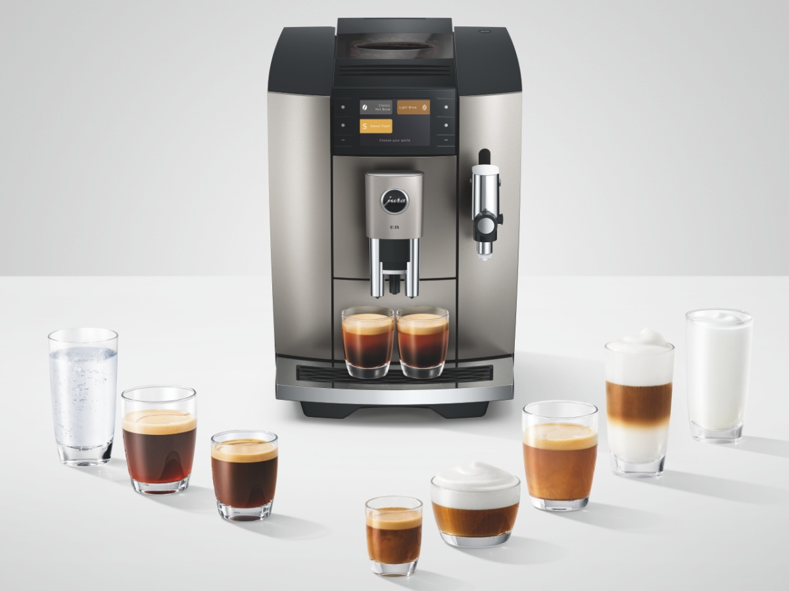

厨房智能硬件 / 饮品方式创新
JURA E8公布日本上市计划，把60℃萃取做成一种选择
第五代E8将热萃、Light Brew与甜味奶泡并列，让一台咖啡机覆盖更多饮用偏好。

JURA日本总代理11月4日宣布，第五代E8 Midnight Silver计划12月4日在日本上市，11月12日开始预售。这是日本市场的上市安排，不能视作该机型全球首次亮相。
官方介绍，新机提供27种菜单，Light Brew以约60℃进行萃取；品牌称这一方式旨在呈现更柔和的风味，实际口感仍需试饮判断。产品还加入定时萃取和糖浆奶泡功能，通过3.5英寸彩色显示屏与按键选择菜单、调整浓度及容量。
JURA日本官网 · 第五代E8上市公告 · 2026-11-04；日本上市计划12月4日家電Watch · E8功能与产品图 · 11月4日17:04 JST，即北京时间16:0411月4日公告；日本预售计划11月12日，正式上市计划12月4日。约60℃指萃取温度，风味描述来自品牌。